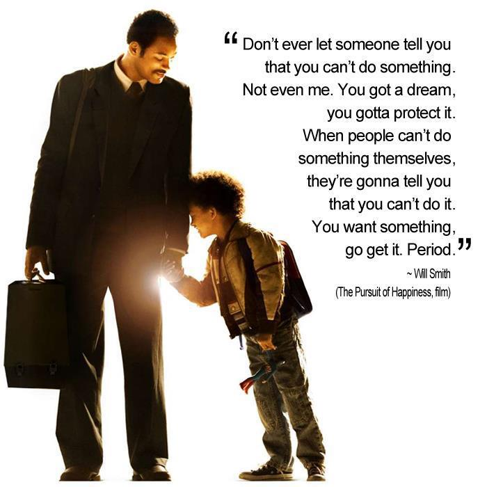
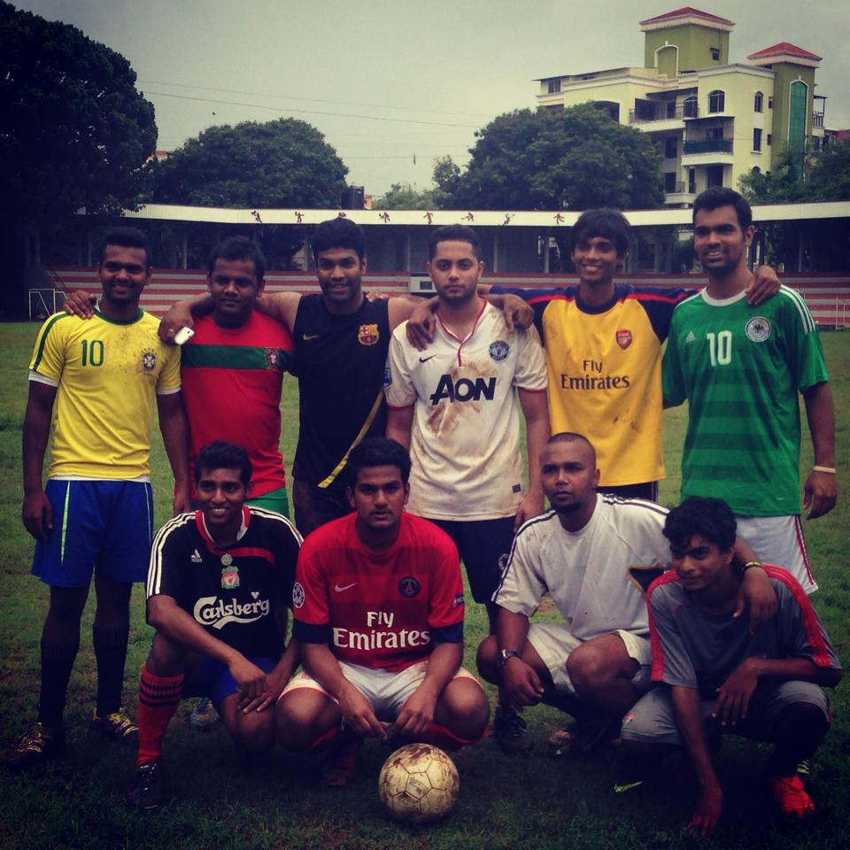
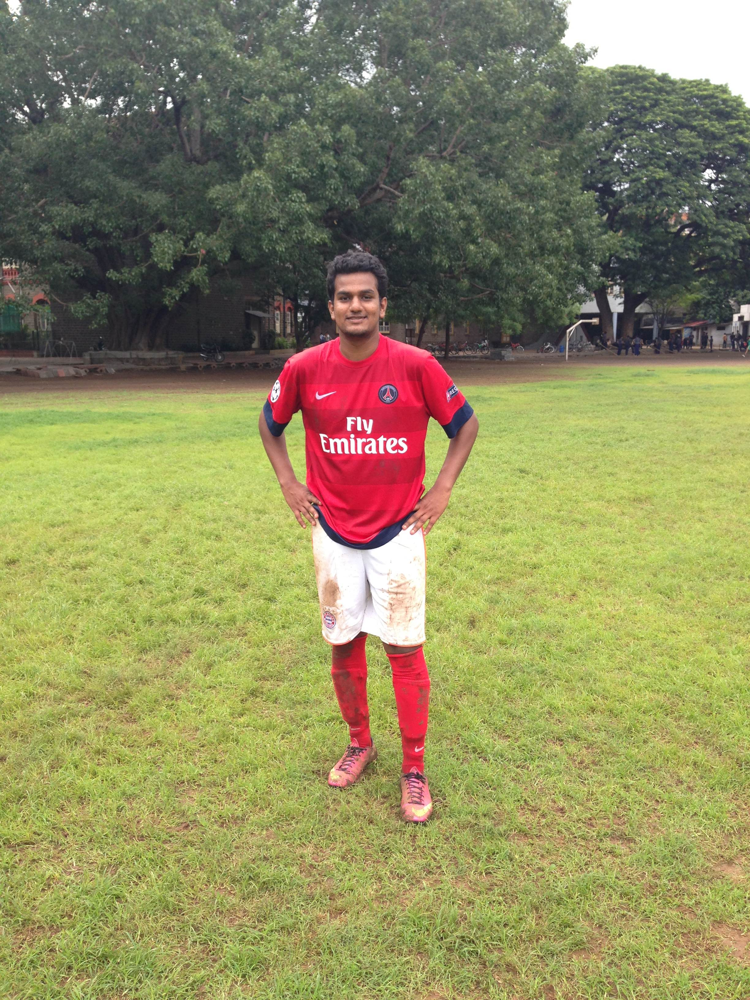

Life's battles are not won by the strongest , the fastest or the best man ....Sooner or later , the man who wins is the one who thinks he can ....
Accept no ones definition of ur LIFE.......Define yourself ur WAY......
"Its great to be alive..cherish what you have ..Reach for your dreams..Store all the memories of your time for it will be ancient history as this big blue ball revolves rapidly..Live to the fullest..Open your arms & set your mind free..& most importantly laugh at every obstacle!!"
In life, if it's not worth fighting for, it's not worth having.'
Everybody is a genius. But if you judge a fish by its ability to climb a tree, it will live its whole life believing that it is stupid. ? Albert Einstein.
It ain't about how hard you hit, its how hard you get hit and keep moving forward.. Its how much you can take and keep moving forward.. That's how winnings done!!!
Falling down is not defeat, Defeat is when you refuse to get up .

JUNE 29 2013 :My school ST.VINCENTS HICH SCHOOL:FOOTBALL TEAM REUNION.

JUNE 29 2013 :Back on the Ground after ages.Truly FOOTBALL is LIFE.

More comming sooon .........................